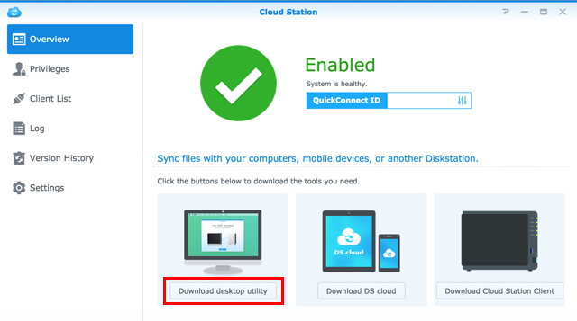

Visão Geral
Cloud Station para eCore Server é uma aplicação de sincronização de ficheiros que lhe permite sincronizar facilmente ficheiros na sua eCore Server com outros dispositivos, como computadores ou dispositivos móveis (com DS cloud). Assim que a Cloud Station estiver instalada na eCore Server e no seu computador, os ficheiros armazenados numa pasta específica no seu computador serão automaticamente sincronizados na sua eCore Server.
1. Instale a Cloud Station
- Aceda ao Centro de Pacotes, localize Cloud Station, e depois clique em Instalar.

2. Ativar a Cloud Station
- Inicie a Cloud Station.
- Se não tiver ativado a funcionalidade home do utilizador, vai ser solicitado que o faça. Clique em OK.
- Será redirecionado para a página de definições do utilizador. Ative a home do utilizador e clique em Aplicar.
- De seguida, volte à Cloud Station, onde será solicitada a respetiva ativação. Clique em Sim.
- Aceda a Privilégios e especifique quais os utilizadores que poderão utilizar a Cloud Station. Clique em Guardar.


3. Instale e active o cliente
- Aceda a Cloud Station > Visão Geral e clique no botão Computadores. 
- Clique no botão para transferir a Cloud Station para o seu sistema operativo. (Também pode transferir a Cloud Station a partir do Centro de Transferências da Synology.)
- Abra o instalador no seu computador e siga as instruções no ecrã.
- Depois da instalação, execute a Cloud Station no seu computador. Clique em Começar Agora.
- Introduza o endereço do eCore Server que executa a Cloud Station (ou QuickConnect ID), nome de utilizador e palavra-passe. Pode clicar no ícone de pesquisa à direita para pesquisar IPs dentro da sua LAN. Clique em Seguinte.
- Seleccione como deseja configurar a sua tarefa (aqui iremos seleccionar Configuração Rápida), depois clique em Seguinte.
- Clique em Concluir para finalizar a configuração da sua pasta Cloud Station.
- Clique em Abrir agora para abrir a sua pasta Cloud Station.
- Pode encontrar o ícone da Cloud Station o tabuleiro de sistema.
- Faça duplo clique no ícone da Cloud Station para abrir o menu do tabuleiro. Aqui pode ver o progresso e estado dos seus ficheiros. Clique em Aplicação principal para abrir a Cloud Station.
- Depois da abertura ser-lhe-ão mostradas algumas sugestões sobre como usar a Cloud Station. Clique na seta para a direita para ver mais sugestões, ou clique em Aceder aos tutoriais online para mais informações. Caso não precise das sugestões, clique em Não mostrar novamente.
- Agora pode gerir as suas tarefas de sincronização na Cloud Station.


4. Sincronizar Dados para os seus Dispositivos Móveis
DS cloud está disponível de forma gratuita na App Store da Apple e Loja Google Play. Pode também digitalizar o código QR abaixo para transferir directamente.